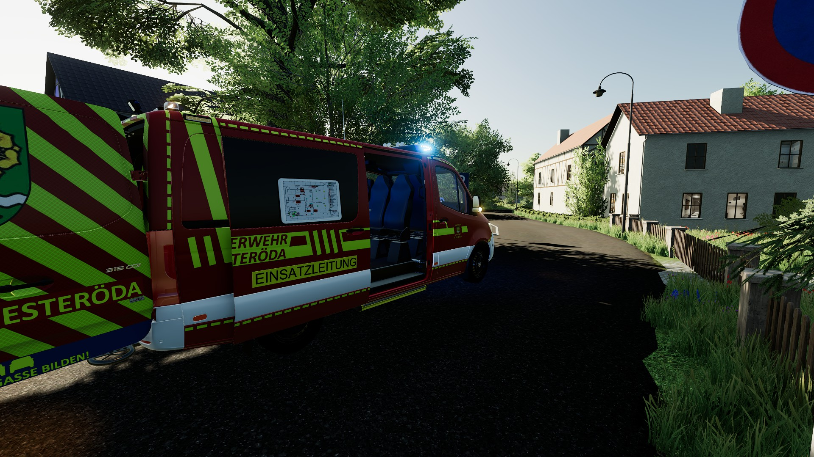
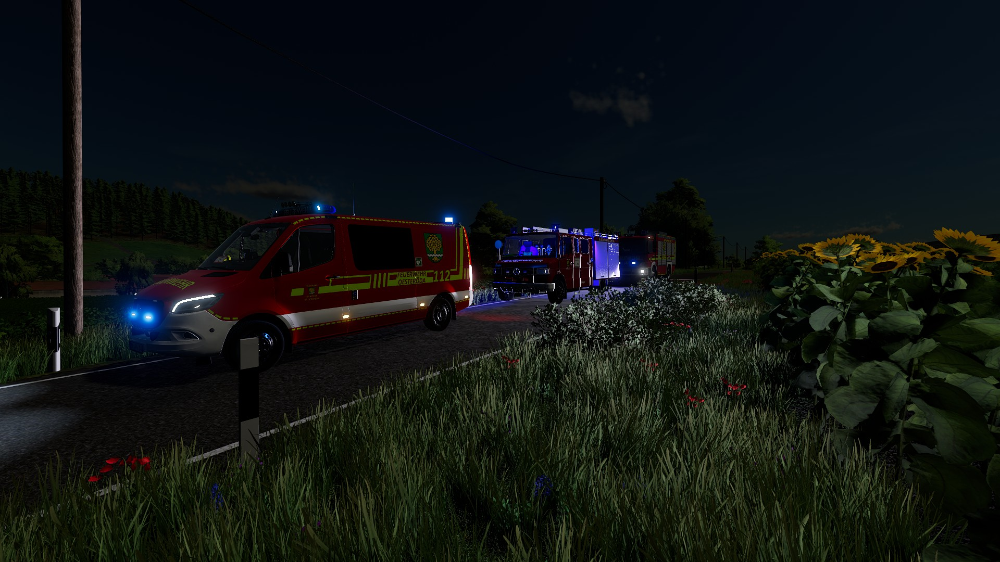
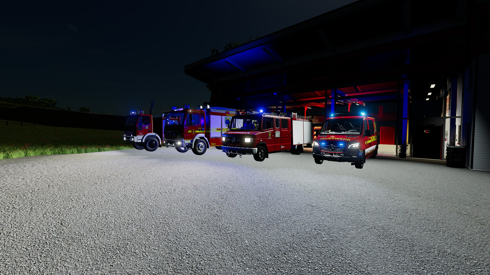
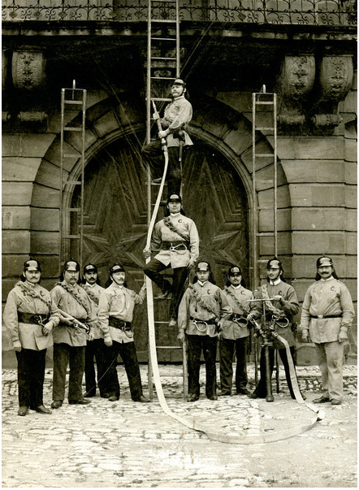
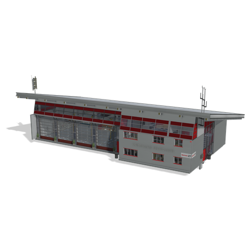

Die Freiwillige Feuerwehr Oesteröda wurde im Jahr 1925 gegründet und steht seither im Dienst der Sicherheit unserer Bürgerinnen und Bürger. Was damals mit einfachster Technik und großem Idealismus begann, hat sich im Laufe der Jahrzehnte zu einer modernen und leistungsfähigen Feuerwehr entwickelt.
In den ersten Jahren verfügte die Wehr über eine handgezogene Tragkraftspritze. Untergebracht war diese in einem umgebauten landwirtschaftlichen Nebengebäude im Ortskern. Das damalige Gerätehaus bot lediglich Platz für ein Fahrzeug sowie die notwendigste Ausrüstung.
Mit steigenden Anforderungen wurde das Gerätehaus in den 1970er Jahren erweitert und bot fortan Platz für zwei Fahrzeuge.

Bis Mitte der 1990er Jahre standen der Feuerwehr Oesteröda unter anderem ein Tragkraftspritzenfahrzeug (TSF) sowie ein Löschgruppenfahrzeug LF 8 zur Verfügung.
Ein bedeutender Fortschritt erfolgte 1995 mit der Indienststellung eines LF 8/6 sowie eines SW 2000. Besonders im Bereich der Brandbekämpfung und der Wasserversorgung über lange Wegstrecken wurde dadurch eine deutliche Leistungssteigerung erreicht.
Im Jahr 2006 folgte mit dem RW 2 ein leistungsstarkes Fahrzeug für technische Hilfeleistungen, insbesondere bei Verkehrsunfällen.
2019 wurde das neue, moderne Gerätehaus mit vier Stellplätzen offiziell eingeweiht. Es bietet optimale Bedingungen für Ausbildung, Einsatzvorbereitung und die Pflege der Kameradschaft.
Zeitgleich wurde ein Mehrzweckfahrzeug (MZF) in Dienst gestellt, das vielseitig für Transport-, Logistik- und Führungsaufgaben eingesetzt wird.

Die kontinuierliche Ausbildung bildet das Fundament unserer Einsatzbereitschaft. Regelmäßige Ausbildungsdienste und Lehrgänge stellen sicher, dass im Ernstfall jeder Handgriff sitzt.
Unser Einsatzspektrum reicht von der Brandbekämpfung über technische Hilfeleistungen bis hin zu Unwettereinsätzen und Unterstützungsleistungen für andere Organisationen.
Die Feuerwehr Oesteröda ist ein fester Bestandteil des gesellschaftlichen Lebens in unserer Gemeinde. Neben dem Einsatzdienst engagieren wir uns bei Veranstaltungen und in der Nachwuchsarbeit.
Besonders stolz sind wir auf unsere Jugendfeuerwehr, die die Zukunft unserer Wehr sichert.
Retten – Löschen – Bergen – Schützen
Seit über 100 Jahren im Dienst für die Sicherheit unserer Gemeinde.